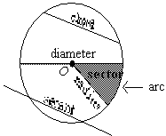

Geometry
- There are four major types of angle
measures:
An acute angle has measure less than 90˚:
A right angle has measure 90˚:
An obtuse angle has measure greater than 90˚:
A straight angle has measure 180°:
- Two angles are supplementary if their angle sum is
180˚:
- Two angles are complementary if their angle sum is
90˚:
- Perpendicular lines meet at right angles:
- When two straight lines meet at a point, they form four
angles. The angles opposite each other are called vertical angles, and they are
congruent (equal). In the figure to the right, a = b,
and c = d.
a = b and c = d - When parallel lines are cut by a transversal, three
important angle relationships exist:

- The shortest distance from a point not on a line to the
line is along a perpendicular line.
- A triangle containing a right angle is called a right
triangle. The right angle is denoted by a small square:
- A triangle with two equal sides is called isosceles. The
angles opposite the equal sides are called the base angles:
- In an equilateral triangle all three sides are equal,
and each angle is 60°:
- The altitude to the base of an isosceles or equilateral
triangle bisects the base and bisects the vertex angle:
Isosceles:
Equilateral:
h =s × √3 2 - The angle sum of a triangle is 180°:
- The area of a triangle is A =
bh , where b is the base and h is the height.1 2 
A =
bh1 2 - In a triangle, the longer side is opposite the larger
angle, and vice versa:
- Pythagorean Theorem (right triangles only): The square
of the hypotenuse is equal to the sum of the squares of the legs.
c2 = a2 + b2 - A Pythagorean triple: the numbers 3, 4, and 5 can always represent the sides of a right triangle and they appear very often: 52 = 32 + 42.
- Two triangles are similar (same shape and usually
different size) if their corresponding angles are equal. If two triangles are
similar, their corresponding sides are proportional:

=a d
=b e c f - If two angles of a triangle are congruent to two angles
of another triangle, the triangles are similar.
In the figure to the right, the large and small triangles are similar because both contain a right angle and they share ∠A.

- Two triangles are congruent (identical) if they have the same size and shape.
- In a triangle, an exterior angle is equal to the sum of
its remote interior angles and is therefore greater than either of them:
e = a + b and e > a and e > b - In a triangle, the sum of the lengths of any two sides
is greater than the length of the remaining side:
x + y > z
y + z > x
x + z > y
- In a 30°–60°–90° triangle, the sides
have the following relationships:
In general
- In a 45°–45°–90° triangle, the sides
have the following relationships:
- Opposite sides of a parallelogram are both parallel and
congruent:
- The diagonals of a parallelogram bisect each other:

- A parallelogram with four right angles is a rectangle.
If w is the width and l is the length
of a rectangle, then its area is A = lw
and its perimeter is P = 2w + 2l:

A = l × w
P = 2w + 2l - If the opposite sides of a rectangle are equal, it is a
square and its area is A = s2 and its perimeter
is P = 4s, where s
is the length of a side:
A = s2
P = 4s - The diagonals of a square bisect each other and are
perpendicular to each other:
- A quadrilateral with only one pair of parallel sides is
a trapezoid. The parallel sides are called bases,
and the non-parallel sides are called legs:
- The area of a trapezoid is the average of the bases
times the height:
A = (
) hb1 + b2 2 - The volume of a rectangular solid (a box) is the product
of the length, width, and height. The surface area is the sum of the area of
the six faces:
V = l × w × h
S = 2wl + 2hl + 2wh - If the length, width, and height of a rectangular solid
(a box) are the same, it is a cube. Its volume is the cube of one of its sides,
and its surface area is the sum of the areas of the six faces:
V = x3
S = 6x2 - The volume of a cylinder is V = πr2h, and the lateral
surface (excluding the top and bottom) is
S = 2πrh, where r is the radius and h is the height:
V = πr2h
S = 2πrh + 2πr2 - A line segment form the circle to its center is a radius.
A line segment with both end points on a circle is a chord.
A chord passing though the center of a circle is a diameter.
A diameter can be viewed as two radii, and hence a diameter’s length is twice that of a radius.
A line passing through two points on a circle is a secant.
A piece of the circumference is an arc.
The area bounded by the circumference and an angle with vertex at the center of the circle is a sector.
 - A tangent line to a circle intersects the circle at only
one point. The radius of the circle is perpendicular to the tangent line at the
point of tangency:
- Two tangents to a circle from a common exterior point of
the circle are congruent:
AB ≅ AC
- An angle inscribed in a semicircle is a right angle:

- A central angle has by definition the same measure as
its intercepted arc.
- An inscribed angle has one-half the measure of its
intercepted arc.
- The area of a circle is πr2, and its
circumference (perimeter) is 2πr, where r
is the radius:
A = πr2
C = 2πr - To find the area of the shaded region of a figure, subtract the area of the unshaded region from the area of the entire figure.
- When drawing geometric figures, don’t forget extreme cases.